Predicting outcome of FIFA World Cup 2018 matches using Machine Learning
Overview
Every four years nations around the world compete for the FIFA World Cup — the ultimate football tournament. The tournament is organized by Fédération Internationale de Football Association (FIFA) which consists of more than 200 nations spread across 6 confederations. FIFA believes strongly that the sport of football is a uniting force for the world. FIFA has admirable goals of increasing participation and access to all. With larger membership than the United Nations, FIFA’s influence spans the globe. While the premier stages of the world cup span little over a month, the preliminary stages of qualification begin more than three years before the final match and last over two years. Over 800 matches are played between the 200+ nations throughout this qualification stage. Each nation plays home and away games.
In this project we will try to build machine learning models, using which we can predict the outcome of a given FIFA World Cup 2018 match.
Goal
As stated in the section above, our goals for this project is to to build machine learning models, using which we can predict the outcome of a given FIFA World Cup 2018 match, and be able to predict the final winner. To achieve this goal, we will —
- Collect data about FIFA matches, teams, and players — using readily available pre-build FIFA related datasets, and scraping data off the publicly available sources on the Internet.
- Analyze, and visualize the collected data, to better understand the nature of data, and observe any evident trends.
- Design features for our dataset, on which we can train various machine learning models.
- Train machine learning models to predict outcome of FIFA matches, using the defined features.
- Ultimately, be able to use our trained models to predict the outcome of —
- FIFA World Cup 2018 — Round-16 matches
- FIFA World Cup 2018 — Quater Final matches
- FIFA World Cup 2018 — Semi Final matches
- FIFA World Cup 2018 — Winner
- With the full trained model(s), we'll be able to produce our predictions, and fill the brackets in the graphic below —
FIFA World Cup 2018 - Brackets
Data
We have collected data from multiple sources —
-
Provided Datasets
international_results.csv: this dataset contains approximately 40,000 match resuts, between the years 1880 - 2018.PlayerAttributeData.csv,PlayerPersonalData.csv,PlayerPlayingPositionData.csv: contains the data for approximately 18,000 FIFA players.
-
Data Scraped from Web
Historical FIFA Ranking Data: The latest men's FIFA ranking data is available at: https://www.fifa.com/fifa-world-ranking/ranking-table/men/index.html, which is published on 07-June-2018. The oldest men's FIFA ranking data is available at: https://www.fifa.com/fifa-world-ranking/ranking-table/men/rank=2/index.html, which was publsihed on 08-August-1993. We have parsed this data from 288+ pages, which provided us the FIFA ranking for various men's teams, for time period between 08-August-1993, and 07-June-2018.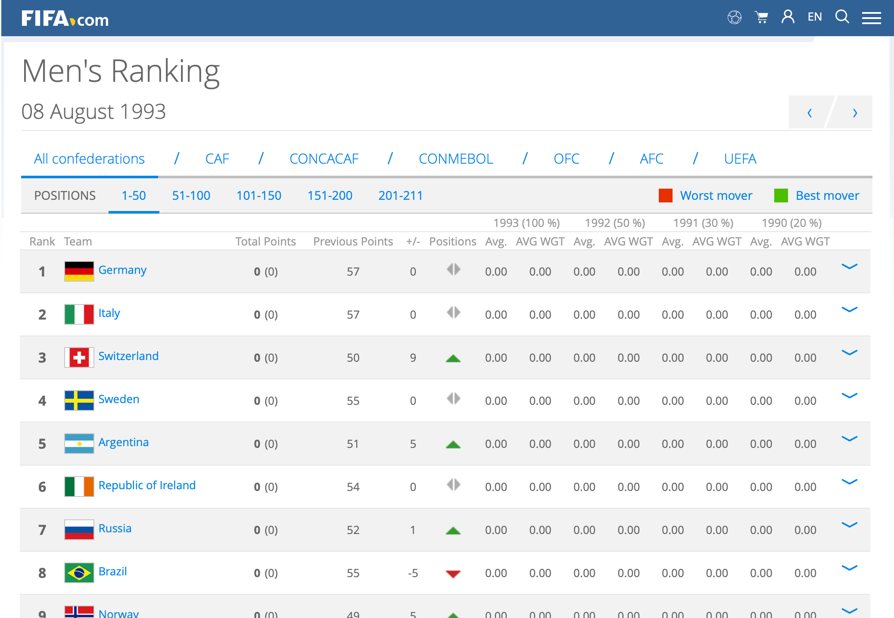
FIFA ranking page for 08-August-1993
Historical FIFA World Cup Winners: The historical FIFA world-cup finals data is available at: https://en.wikipedia.org/wiki/List_of_FIFA_World_Cup_finals, which is last published (updated) on 25-July-2018. We'll scrape this data to build a dataset of historical FIFA world cup winners.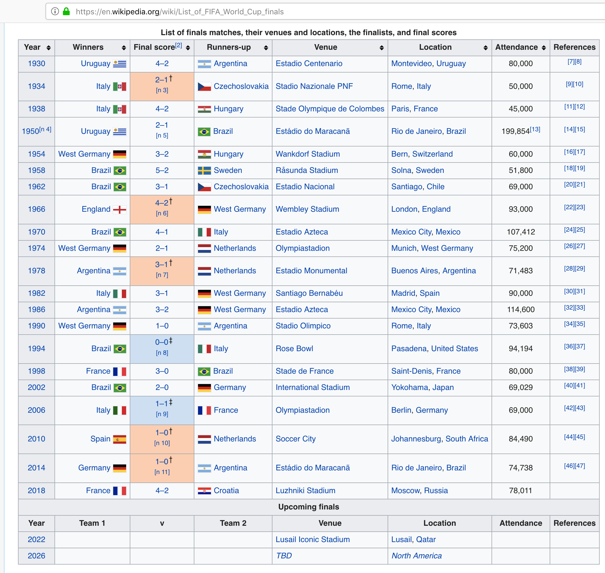
Historical FIFA World Cup Final Match Results
FIFA World Cup — All Time Team Rankings: FIFA all time team rankings, and associated team statistics is available at https://www.fifa.com/fifa-tournaments/statistics-and-records/worldcup/teams/index.html. We'll scrape this data to build a dataset of FIFA team rankings.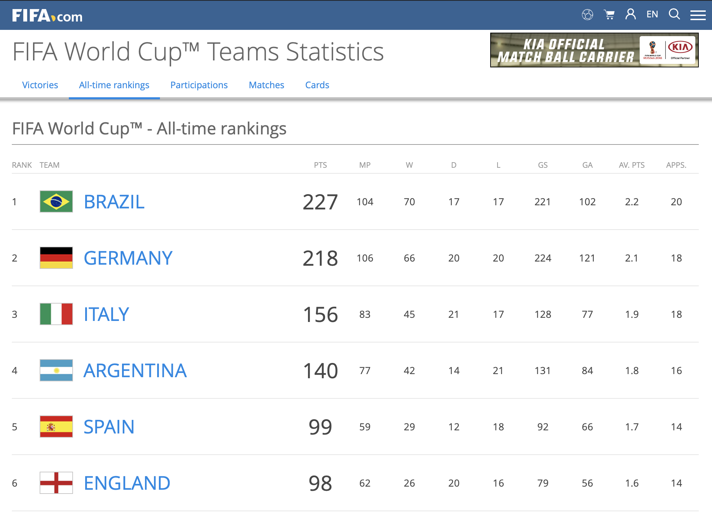
FIFA World Cup — All Time Team Rankings
FIFA World Cup — Participations: FIFA World Cup - team participations, and associated team statistics is available at https://www.fifa.com/fifa-tournaments/statistics-and-records/worldcup/teams/index.html. We'll scrape this data to build a dataset of FIFA team participations in world cup tournament.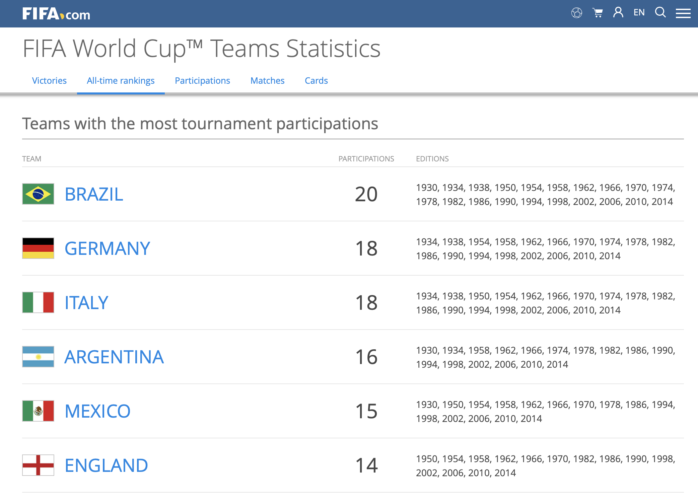
FIFA World Cup — Team Participations
Note: process & method of data collection using web-scraping is documented in the supplemental notebook: nb_webscrape.ipynb.
Literature Review
Prediction of the FIFA World Cup 2018 using a Random Forest Model
Prediction of the FIFA World Cup 2018 – A random forest approach with an emphasis on estimated team ability parameters, Andreas Groll, Christophe Ley, Gunther Schauberger, Hans Van Eetvelde
In this research, the author computed three different models, Poisson regression models, random forests and ranking methods , to predict the scores the soccer matches in FIFA World Cup 2018. The fundamental of the three models is essentially based on the predictive performances from the four previous FIFA World Cups. The Poisson Regression model and the random forest is based on the teams’ covariate information, while the Ranking method estimates ample parameters that reflect the current strength of the teams . According to the authors, the best predictive models were the Ranking method and the Random Forest. However to maximize the predictive performance, the random forest was stacked with the ranking methods to create an ensemble model . The team ability parameters from the ranking methods as an additional covariate substantially improved the predictive power. The team ability parameters were estimated by a bivariate Poisson model with a half period of 3 years. All the matches of 228 national teams played since 2010-06-13 up to 2018-06-06 were used in the estimations, which resulted in more than 7000 matches. The recent predictor variables are taken as the latest values shortly before the world which includes the latest national teams of 23 player for the upcoming World Cup. Finally, the whole tournament was simulated in the 100,000 times. Based on the simulations, the probabilities of each of the 32 national team reaching the knockout stage, quarter finals, semi finals and finals are obtained. According to these simulations, Spain and Germany turned out to be the top favorites, with a slight advantage for Spain.
Elo Ranking Based Prediction Models for the FIFA World Cup 2018
On Elo based prediction models for the FIFA World cup 2018, Gilch, Lorenz A.; Müller, Sebastian
For the upcoming FIFA World Cup 2018, the authors of this research piece decided to compute on various Poisson regression models with increasing complexity that include the Elo points of the teams as covariates and incorporates differences of team specific effects. Elo ranking was preferred over the FIFA ranking because the FIFA ranking changed over time, and the Elo ranking is more widely used in football forecast models. At time of this analysis, the composition and the line ups of teams were not released hence lack two other covariates. To compensate for this, the authors took the approach to solely base their models on the Elo points and matches of the participating teams on neutral ground since 2010.
The four types of Poisson models used in this are Independent Poisson regression model, Bi-variance Poisson regression model, Bivariate Poisson regression with diagonal inflation, and Nested Poisson regression model. The models were validated on the data of the FIFA Worldcups 2010 and 2014. For each model, 100,000 simulations were performed. The whole tournament was simulated according to the FIFA rules, that is at the end of each group stage, the final group table is evaluated according to the FIFA rules, except Fair-Play criterion. Next, the Elo scores of the teams were updated after each game. Furthermore, the score of matches which goes into extra is simulated with Poisson rates of 30 minutes (90 minutes/3). A major part of the statistical novelty of the presented work lies in the introduction of two new score functions for ordinal variables as well as the construction of the nested regression model. This model outperforms previous studied models, that use (inflated) bivariate Poisson regression, when tested on the previous FIFA World Cups 2010 and 2014. To conclude, the Poisson regression models coincide in the order of the first four favorites for the cup. In particular, they favor Germany and not Brazil. However, single probabilities may be quite different. For instance, Germany is estimated to win the cup with 26.00% in the independent Poisson regression model and with 30.50% in the nested Poisson regression model. The circumstance that all models do favor Germany and not Brazil may depend on team specific effects and the following fact. If both Germany and Brazil win their group they will meet only in the final, where Germany is predicted to have the advantage.
Monte Carlo Modelling of the FIFA World Cup
University of Adelaide , Predicting the outcomes of FIFA World Cup, Steve Begg, University's Australian School of Petroleum, https://phys.org/news/2018-06-outcomes-fifa-world-cup.html
Steve Begg ,who is the Professor of Decision-making and Risk Analysis at the University's Australian School of Petroleum, has developed a Monte Carlo Simulation of the FIFA World Cup 2018. The Monte Carlo Simulation is essentially based on team rankings as well other inputs, for example, recent form. The primary concept of the Monte Carlo Model is instead of trying to workout every possible outcome of a complex system, enough possibilities are modelled inorder to be able to estimate the chance of any particular outcome occurring. This approach eradicates the possibility of overfitting of a highly complex model and provides a more flexible model. "The outcomes of many decisions we make are uncertain because of things outside of our control," says Professor Begg.. Although just the mere group stage provides with almost 430 million outcomes, Professor Begg has decided to generate a sum total of 100000 possible ways the whole tournament of 63 matches could occur. In the Monte Carlo model, the two uncertainties are the team’s tournament form and the team’s match form. The potential scores for each occurring match is derived from the possible number of goals, based on scores from all matches in the three recent World Cups and the two teams’ relative match form. Based on his input , Professor Begg has calculated the Socceroos (Australian national team) has 14% chance of advancing through the Groups stage, 3.8% of making the Quarters, 1.2% of the Semis, 0.3% of being in the Final, and 0.1% chance of being the 2018 World Cup Champions. Although this may seem like a set of disappointing set of probabilities from the perspective of Australian, Professor Begg stresses on the fact it’s important to predict based on evidence and reasoning rather than emotions.
Exploratory Data Analysis (EDA)
In this section we will explore the data (listed in the section above). We will —
- Load and visually inspect the observations, and variables, in each dataset.
- Review statistical summaries, like - range, mean, median, etc. for various variables.
- Draw plots to visually inspect any trends in the data.
Lets start exploring the data
# import the necessary libraries
%matplotlib inline
import numpy as np
import scipy as sp
import matplotlib as mpl
import matplotlib.cm as cm
import matplotlib.pyplot as plt
from matplotlib.lines import Line2D
import pandas as pd
from pandas import Series
import random
Dataset: International Results
International Results dataset contains historical soccer-match results, from the year 1872, till the current year, 2018. The dataset contains 39,654 observations, and 9 variables —
date: when the match is heldhome_team: name of the home teamaway_team: name of the away teamhome_score: number of goals made by the home_teamaway_score: number of goals made by the away_teamtournament: name of the tournament, ex: FIFA World Cupcity: where the game is heldcountry: where the game is held.neutral: False, if game venue is not in home_team's city/ country. True, otherwise.
df_matches = pd.read_csv("datasets/fifa/international_results.csv")
print("df_matches: ", df_matches.shape)
print(df_matches.dtypes)
df_matches.sample(10)
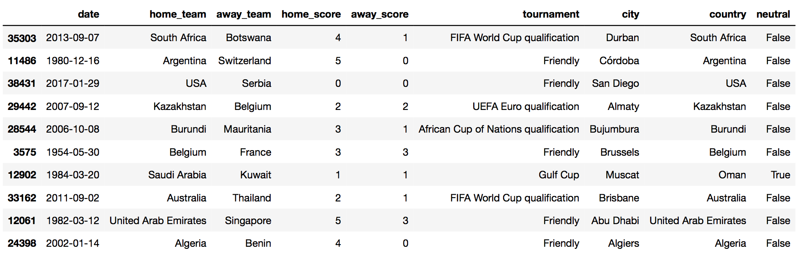
Add new features: Year, Net Score, Result
We'll add couple of additional variables — dervied from the existing set of variables. These new variables do not add any new information to the dataset, but will help us to summarize, and visualize the data in a better way —
neutral: changed datatype to numeric binary (from boolean binary)year: when the match is heldnet score: home_score minus the away_scoreresult: of the game0 (loss): indicates home_team losses the game1 (win): indicates home_team wins the game2 (draw): indicates game is a draw
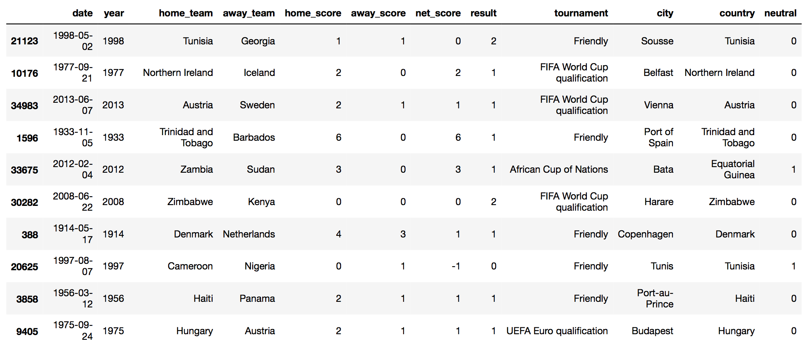
Visualize: Game & Game Results Distributions
We'll run some basic data visualization, to visually observe data distributions, and trends.
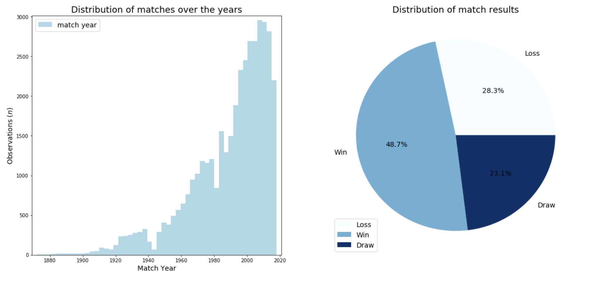
From the plots above we can see that —
- data is significantly skewed over the
yearvariable. The volume of data available between1990 - 2018(18 years) is far greater than the volume of data available between1880 - 1990(110 years). This trend could be for many reasons — (1) more games being played in recent years, (2) more data being captured & recorded for the games being played. We'll keep this trend in mind, while working with this dataset to build our learning models. - data is also skewed over the
resultvariable. There are far more observations withresult=win, compared to combined observations ofresult=loss, andresult=draw. Asresultvariable will be our outcome variable, we would have preferred if the volume of data was balanced between these three levels ofresultvariable. We'll have to keep this trend in mind, while working with this dataset to build our learning models.
Visualize: Top 20 Winners & Losers
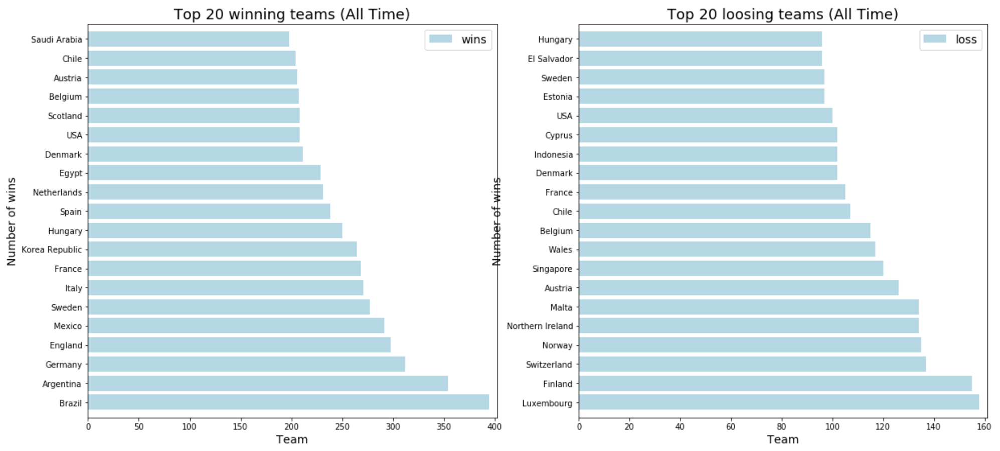The plot above shows the —
- top-20 teams (left-plot) of all time: Brazil, Argentina, Germany, England, Mexico, ...
- bottom-20 teams (right-plot) of all time: Luxembourg, Finland, Switzerland, Norway, Malta, ...
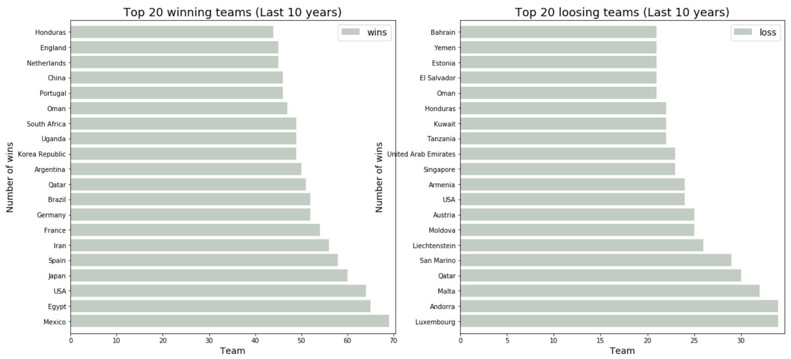
The plot above shows the —
- top-20 teams (left-plot) for last 10 years: Mexico, Egypt, USA, Japan, Spain, ...
- bottom-20 teams (right-plot) for last 10 years: Luxembourg, Andorra, Malta, Qatar, San Marino, ...
From the data above we can see that there is a significant change in both top & bottom team orders within last 10 years. We see the top 4 teams of all time: Brazil, Argentina, Germany, England, do not show up in top 5 teams for last 10 years. What could be the reason for this?
Add new features: FIFA Team Ranking
We scraped FIFA offical team rankings, from: https://www.fifa.com/fifa-world-ranking/ranking-table/men/index.html. FIFA started maintaing the offical ranking data from the year 1993, and this data gets updated on monthly basis. We are adding following new variables —
home_rank: max rank of the home team in the given yearaway_rank: max rank of the away team in the given yearrank_diff: difference between home_team rank and away_team rank
Note: as FIFA ranking data starts from year 1993, we'll be dropping any observation from the original dataset, which is older than year 1993.
# load FIFA ranking dataset
df_ranking = pd.read_pickle("datasets/ranking_data.pkl")
df_ranking.sample(10)
# groupby FIFA ranking data by team. aggregate on rank
df_grouped_ranking = df_ranking.groupby(["year","team"]).agg({
"rank": 'max'
}).copy()
df_grouped_ranking = df_grouped_ranking.reset_index()
df_grouped_ranking['year'] = pd.to_numeric(df_grouped_ranking['year'])
df_grouped_ranking['rank'] = pd.to_numeric(df_grouped_ranking['rank'])
df_grouped_ranking.sample(10)
# apply transformation on original dataset
df_matches = df_matches.drop(df_matches[df_matches.year < 1993].index)
df_matches['home_rank'] = df_matches.apply(get_home_rank, axis=1)
df_matches['away_rank'] = df_matches.apply(get_away_rank, axis=1)
df_matches['rank_diff'] = df_matches.apply(get_rank_diff, axis=1)
df_matches.sample(10)
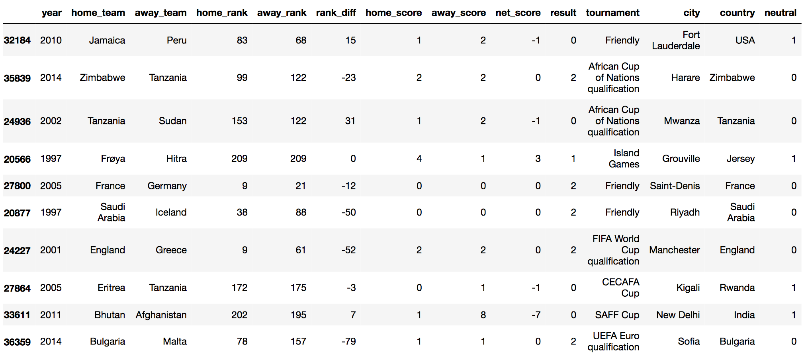
Visualize: Distribution of Team Rankings, and Rank Difference, grouped by Game Results
We'll run some visualizations based on team rankings to understand, how the team ranking affects the outcome of a match.'
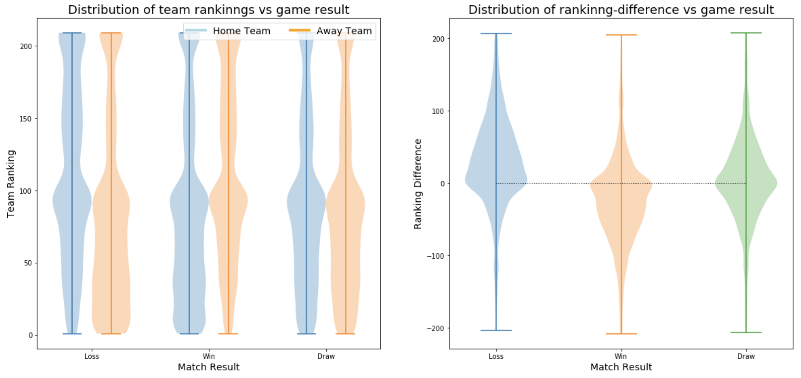The left-side plot above seems to suggest that team rankings might be correlated to outcome of the match. The first set of violin-plots suggest that when home_team ranking are lower than away_team ranking, the home_team is more likely to loose the game. The middle set of violin-plots suggest that when home_team ranking are greater than away_team ranking, the home_team is more likely to win the game. The last set of violin-plots (to the extreme right), suggest that when home_team ranking, and away_team ranking are similar, the game is more likely to draw.
Add new features
We'll add more features to our dataset —
year_wt: Year Weight: higher weightage to recent data, lower weightage to older datahome_wc_points: FIFA World Cup Points for home teamaway_wc_points: FIFA World Cup Points for away teamhome_wc_plays: FIFA World Cup Participations by home teamaway_wc_plays: FIFA World Cup Participations by away teamhome_p_age_wt: FIFA Player's Age weight for home teamaway_p_age_wt: FIFA Player's Age weight for away teamhome_p_prf_wt: FIFA Player's Performance weight for home teamaway_p_prf_wt: FIFA Player's Performance weight for away team
Add new features: Quadratic & Interaction terms
We'll add some qudratic and interaction terms, which we know are not linear in real world —
home_p_age_wt_2: 2nd order term for FIFA Player's Age weight for home teamhome_p_age_wt_3: 3rd order term for FIFA Player's Age weight for home teamhome_p_prf_wt_2: 2nd order term for FIFA Player's Performance weight for home teamhome_p_prf_wt_3: 3rd order term for FIFA Player's Performance weight for home teamhome_p_age_perf_wt: interaction term between FIFA Player's Age and Performance weight for home teamaway_p_age_wt_2: 2nd order term for FIFA Player's Age weight for away teamaway_p_age_wt_3: 3rd order term for FIFA Player's Age weight for away teamaway_p_prf_wt_2: 2nd order term for FIFA Player's Performance away for home teamaway_p_prf_wt_3: 3rd order term for FIFA Player's Performance away for home teamaway_p_age_perf_wt: interaction term between FIFA Player's Age and Performance weight for away team
Normalize data & Dummy variables
Finally, we will normalize all continous variables, and convert home_team, and away_team categorical variables into their respective dummy variables.
Create Training and Test split
Our final dataset has 11,746 observations, and 577 predictor variables. We'll split this dataset into 90%-10% between training and test datasets.
# split training and test datasets
X_train, X_test, y_train, y_test = train_test_split(x_df_final, y_df_final, test_size=0.1, random_state=42)
print(X_train.shape, X_test.shape, y_train.shape, y_test.shape)
[out]: (10571, 576) (1175, 576) (10571,) (1175,)Building Models
We'll build following models —
-
Single Models
- Logistic Regression
- Linear Discriminant Analysis
- Quadratic Discriminant Analysis
- K-Nearest Neighbors
- Decision Tree Classifier
-
Ensemble Models
- Random Forest Classifier
- AdaBoost Classifier
- Stacking
- Neural Network
- Compare Model Performance
Note: We use GridSearchCV to tune hyper parameters
for each of the model, we train.
Logistic Regression
# build parameters list to find best parameter values
parameters = {
'C':[.01, 1, 10, 100, 1000],
'solver':['newton-cg', 'lbfgs', 'sag'],
'fit_intercept':[True,False]
}
# build base estimator model, and run GridSearchCV to find best model
start_time = time.time()
model = LogisticRegression(penalty="l2", max_iter=1000)
gs = GridSearchCV(estimator=model, param_grid=parameters, cv=5, n_jobs=4, verbose=1).fit(X_train, y_train)
exe_time = round((time.time() - start_time)/60, 2)
[Logistic Regression]
Execution time : 4.32 minutes
Train Accuracy : 0.7409
Test Accuracy : 0.7106
Best Model:
LogisticRegression(C=1, class_weight=None, dual=False, fit_intercept=False,
intercept_scaling=1, max_iter=1000, multi_class='ovr', n_jobs=1,
penalty='l2', random_state=None, solver='lbfgs', tol=0.0001,
verbose=0, warm_start=False)
Linear Discriminant Analysis
# build parameters list to find best parameter values
parameters = {
'shrinkage':[.001, .01, .1, 1],
'solver':['lsqr', 'eigen']
}
# build base estimator model, and run GridSearchCV to find best model
start_time = time.time()
model = LinearDiscriminantAnalysis()
gs = GridSearchCV(estimator=model, param_grid=parameters, cv=5, n_jobs=4, verbose=1).fit(X_train, y_train)
exe_time = round((time.time() - start_time)/60, 2)
[Linear Discriminant Analysis]
Execution time : 0.07 minutes
Train Accuracy : 0.7405
Test Accuracy : 0.7140
Best Model:
LinearDiscriminantAnalysis(n_components=None, priors=None, shrinkage=0.1,
solver='lsqr', store_covariance=False, tol=0.0001)
Quadratic Discriminant Analysis
# build parameters list to find best parameter values
parameters = {
'reg_param':[.001, .01, .1, 1]
}
# build base estimator model, and run GridSearchCV to find best model
start_time = time.time()
model = QuadraticDiscriminantAnalysis()
gs = GridSearchCV(estimator=model, param_grid=parameters, cv=5, n_jobs=4, verbose=1).fit(X_train, y_train)
exe_time = round((time.time() - start_time)/60, 2)
[Quadratic Discriminant Analysis]
Execution time : 0.15 minutes
Train Accuracy : 0.7086
Test Accuracy : 0.6868
Best Model:
QuadraticDiscriminantAnalysis(priors=None, reg_param=0.1,
store_covariance=False, store_covariances=None, tol=0.0001)
K-Nearest Neighbors
# build parameters list to find best parameter values
parameters = {
'n_neighbors':[10, 20, 40, 60],
'weights':['uniform','distance'],
'algorithm':['ball_tree','kd_tree']
}
# build base estimator model, and run GridSearchCV to find best model
start_time = time.time()
model = KNeighborsClassifier()
gs = GridSearchCV(estimator=model, param_grid=parameters, cv=5, n_jobs=4, verbose=1).fit(X_train, y_train)
exe_time = round((time.time() - start_time)/60, 2)
[K-Nearest Neighbors]
Execution time : 29.1 minutes
Train Accuracy : 0.9886
Test Accuracy : 0.6528
Best Model:
KNeighborsClassifier(algorithm='kd_tree', leaf_size=30, metric='minkowski',
metric_params=None, n_jobs=1, n_neighbors=20, p=2,
weights='distance')
Decision Tree Classifier
# build parameters list to find best parameter values
parameters = {
'criterion':['gini','entropy'],
'splitter':['best','random'],
'max_depth':[5,10,50,30,60]
}
# build base estimator model, and run GridSearchCV to find best model
start_time = time.time()
model = DecisionTreeClassifier()
gs = GridSearchCV(estimator=model, param_grid=parameters, cv=5, n_jobs=4, verbose=1).fit(X_train, y_train)
exe_time = round((time.time() - start_time)/60, 2)
[Decision Tree Classifier]
Execution time : 0.12 minutes
Train Accuracy : 0.7034
Test Accuracy : 0.6689
Best Model:
DecisionTreeClassifier(class_weight=None, criterion='entropy', max_depth=10,
max_features=None, max_leaf_nodes=None,
min_impurity_decrease=0.0, min_impurity_split=None,
min_samples_leaf=1, min_samples_split=2,
min_weight_fraction_leaf=0.0, presort=False, random_state=None,
splitter='random')
Random Forest Classifier
# build parameters list to find best parameter values
parameters = {
'n_estimators':[20,40,80,100,200],
'criterion':['gini','entropy'],
'max_depth':[5,10,50,30,60]
}
# build base estimator model, and run GridSearchCV to find best model
start_time = time.time()
model = RandomForestClassifier(bootstrap=True)
gs = GridSearchCV(estimator=model, param_grid=parameters, cv=5, n_jobs=4, verbose=1).fit(X_train, y_train)
exe_time = round((time.time() - start_time)/60, 2)
[Random Forest Classifier]
Execution time : 2.49 minutes
Train Accuracy : 0.9501
Test Accuracy : 0.6868
Best Model:
RandomForestClassifier(bootstrap=True, class_weight=None, criterion='entropy',
max_depth=30, max_features='auto', max_leaf_nodes=None,
min_impurity_decrease=0.0, min_impurity_split=None,
min_samples_leaf=1, min_samples_split=2,
min_weight_fraction_leaf=0.0, n_estimators=100, n_jobs=1,
oob_score=False, random_state=None, verbose=0,
warm_start=False)
AdaBoost Classifier
# build parameters list to find best parameter values
parameters = {
'learning_rate':[0.001, 0.01, 0.1, 1],
'n_estimators':[10,20,40,80,100]
}
# build base estimator model, and run GridSearchCV to find best model
start_time = time.time()
rf_model = RandomForestClassifier(bootstrap=True)
model = AdaBoostClassifier(base_estimator=rf_model)
gs = GridSearchCV(estimator=model, param_grid=parameters, cv=5, n_jobs=4, verbose=1).fit(X_train, y_train)
exe_time = round((time.time() - start_time)/60, 2)
[AdaBoost Classifier]
Execution time : 9.61 minutes
Train Accuracy : 0.9886
Test Accuracy : 0.6621
Best Model:
AdaBoostClassifier(algorithm='SAMME.R',
base_estimator=RandomForestClassifier(bootstrap=True, class_weight=None, criterion='gini',
max_depth=None, max_features='auto', max_leaf_nodes=None,
min_impurity_decrease=0.0, min_impurity_split=None,
min_samples_leaf=1, min_samples_split=2,
min_weight_fraction_leaf=0.0, n_estimators=10, n_jobs=1,
oob_score=False, random_state=None, verbose=0,
warm_start=False),
learning_rate=0.001, n_estimators=100, random_state=None)
Stacking
N=25
all_results = {}
for model in models.keys():
counter = 1
print("[{}]: computing bootstraped results...".format(model))
train_results=[]
test_results=[]
for i in range(N):
X, y = resample(X_train, y_train)
fit = models[model].fit(X, y)
train_results.append(round(accuracy_score(y, fit.predict(X)),4))
test_results.append(round(accuracy_score(y_test, fit.predict(X_test)),4))
colname = model + "." + str(counter)
stacked_results[colname] = fit.predict(X_test)
counter+=1
all_results.update({model:[train_results, test_results]})
[logistic]: computing bootstraped results...
[lda]: computing bootstraped results...
[qda]: computing bootstraped results...
[knn]: computing bootstraped results...
[dtc]: computing bootstraped results...
[rfc]: computing bootstraped results...
[ada]: computing bootstraped results...
Train Accuracy : 0.9944
Test Accuracy : 0.7013
Neural Network
kfold = StratifiedKFold(n_splits=10, shuffle=True, random_state=42)
start_time = time.time()
for train, test in kfold.split(X, Y):
print("KFold: {}".format(counter), end="\r")
nn_model = Sequential([
Dense(576, input_shape=(576,), kernel_initializer='normal', activation='relu'),
Dense(144, kernel_initializer='normal', activation='relu'),
Dense(36, kernel_initializer='normal', activation='relu'),
Dense(9, kernel_initializer='normal', activation='relu'),
Dense(1, kernel_initializer='normal', activation='sigmoid')
])
nn_model.compile(loss='binary_crossentropy', optimizer='adam', metrics=['accuracy'])
mfit = nn_model.fit(X.iloc[train], Y[train], epochs=50, validation_split=0.2, shuffle=True, verbose=0)
nn_scores = nn_model.evaluate(X.iloc[test], Y[test], verbose=0)
nn_score = round(nn_scores[1],4)
nn_cvscores.append(nn_score)
counter+=1
end_time = time.time()
exe_time = round((end_time - start_time)/60, 2)
[Neural Network]
Execution time : 9.49 minutes
Train Accuracy : 0.8821
Test Accuracy : 0.6638
_________________________________________________________________
Layer (type) Output Shape Param #
=================================================================
dense_96 (Dense) (None, 576) 332352
_________________________________________________________________
dense_97 (Dense) (None, 144) 83088
_________________________________________________________________
dense_98 (Dense) (None, 36) 5220
_________________________________________________________________
dense_99 (Dense) (None, 9) 333
_________________________________________________________________
dense_100 (Dense) (None, 1) 10
=================================================================
Total params: 421,003
Trainable params: 421,003
Non-trainable params: 0
_________________________________________________________________
None
Model Comparision
The table, and plot below shows the performance of each model on test data,
using 25-bootstaps for each model. We can see that Logistic and
Linear Discriminant Analysis models gives us the best performance.
KNN is the least performing model. Stacking all the models, gives us the
similar performance as the other best performing models.
Mean training & test accuracy scores of various models
Comparing performance of various models
Note: we did not bootstrapped Neural Network, and Stacking models.
The results shown above are from single model run.
Final Predictions
Finally we run our trained models, starting from the Round-16 match line-ups.
Our model, predicts the outcome for each of the Round-16 matches. Based on
Round-16 predictions, our model then proceeds to predict following rounds
— Quater Finals, Semi Finals, and Final.
We use the stacking approach to predict the result of each match.
Each match data is run through each of the trained models, discussed above.
We then combine results from each of the model, and take a popular vote to
classify the outcome as Win/ Loose for the home team. (here, home team is
defined as the team listed first on the match line-up.)
Final predictions from our trained models